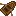

Гребные лодки
Итак, вы достигли Железного века и хотите обновления? Что ж, тогда гребная лодка — ваш вариант. В ней три сиденья, следовательно, она может вместить до 3 игроков или до 2 животных, включая лошадей! Как обычно, вы можете заменить сиденья (за исключением сиденья пилота) контейнерами по своему усмотрению. Вы также можете разместить два дополнительных контейнера на корме.

В гребной лодке, в отличие от других лодок, вы будете сидеть спиной к направлению движения во время управления. Это дает вам механическое преимущество, так как вы можете действительно приложить все силы к веслам! Конечно, вы можете управлять лодкой от первого лица, но вам может показаться более интуитивным управление от третьего лица, смотря на себя.
Для постройки гребной лодки вам потребуется начать с корабельной обшивки. Она позволяет удерживать материалы лодки на месте, пока вы строите.
Затем разместите их лицевой стороной внутрь в области 2 на 3.
Обшивка гребной лодки
Структура
Расположенная корабельная обшивка для строительства гребной лодки.
Далее вам нужно добавить доски из подходящей, сильной древесины:
Акация
Ясень
Осина
Береза
Гренадила
Каштан
Орех
Клен
Дуб
Палисандр
Платан
Обшивка гребной лодки
Структура
К каждой обшивке добавили четыре доски.
Обшивка гребной лодки
Структура
Используя кувалду в дополнительной руке, добавьте по четыре медных болта к каждой обшивке. Медные болты выковываются из медных слитков.
Обшивка гребной лодки
Структура
Наконец, добавьте держатели для весла по центру лодки. Они выковываются из двойных слитков кованого железа.
Теперь добавьте весла через ПКМ и вы готовы отправиться в путь!